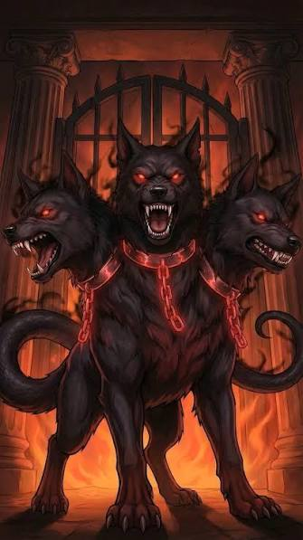

The Gates of Cerberus
You follow the River Styx instead of searching the temple. The path leads you to the gates of Cerberus. You realize too late that you have made a dangerous choice. Your investigation ends here.
Health: 0
Inventory: None
Time: Day 1

GAME OVER
You failed to find Apollo. Your investigation has ended.